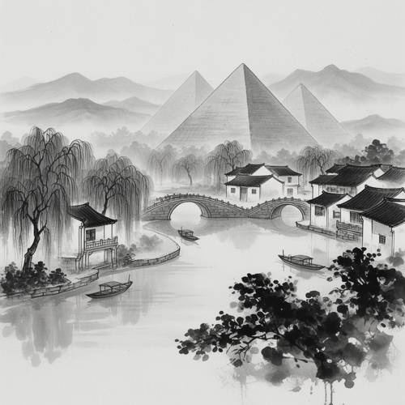
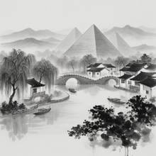

World Knowledge — Please draw a scene in the style of ink painting: Egyptian pyramids ar
Please draw a scene in the style of ink painting: Egyptian pyramids are located in the lush Jiangnan water town, but no desert elements can appear in the picture.


Judge — Direct
- PASSWorld Knowledge — The image correctly depicts the key architectural elements. In the background, there are three large, triangular structures that are identifiable as Egyptian pyramids. In the foreground and middle ground, there is a scene featuring a canal, traditional Chinese-style houses with tiled roofs, an arched bridge, and awning-covered boats, which are all characteristic features of a Jiangnan water town.
- PASSStyle — The artwork is rendered in a monochromatic palette of black, white, and gray tones. It employs techniques such as varied line weights and ink washes to create texture, depth, and shading, which is consistent with the style of an ink painting.
- FAILGrammar - Negation — The prompt specifies that no desert elements should appear. However, the ground upon which the pyramids are built is depicted as bare, rolling hills, suggesting an arid or barren landscape. This bare earth/sand is a desert element, failing to adhere to the negative constraint.
- PASSRelationship - Composition — The image places the Egyptian pyramids in the background, directly behind the buildings of the Jiangnan water town. This composition creates a single, unified scene where the pyramids are situated within the same visual landscape as the town.
Judge — Continuum
- PASSWorld Knowledge — The image successfully depicts both Egyptian pyramids, visible as three large triangular structures in the background, and a Jiangnan water town, characterized by traditional Chinese-style houses with dark roofs, an arched stone bridge, a river, and weeping willow trees.
- PASSStyle — The image is rendered in a traditional Chinese ink painting style, utilizing monochromatic tones of black and grey, characteristic brushstrokes for foliage and water, and atmospheric perspective with mist in the background.
- PASSGrammar - Negation — The image adheres to the negative constraint, as there are no desert elements such as sand, dunes, or arid terrain. The environment is lush, filled with water, trees, and mist.
- PASSRelationship - Composition — The image correctly places the Egyptian pyramids within the scene of the Jiangnan water town. The pyramids are situated in the background, rising behind the town and trees, creating a unified and surreal landscape.
What the agent did
Thinking
Pyramids in Jiangnan water town, ink painting style, no desert. Generate with flux2-dev per benchmark policy.
Step 1 — `generate_image`
{
"prompt": "Traditional Chinese ink wash painting (shuimo hu\u00e0), monochrome black and grey ink with subtle water staining on rice paper. Egyptian pyramids with smooth triangular stone faces rising among a lush Jiangnan water town: winding canals with arched stone bridges, white-walled black-tiled houses, weeping willows, misty water reflections, small wooden boats, distant soft mountains in layered ink wash. Lush greenery rendered as dark ink foliage clusters. No sand, no desert, no camels. Elegant negative space, faint ink mist, poetic composition.",
"model": "flux2-dev"
}Result img_0

Thinking
The image looks quite good: ink painting style, pyramids, Jiangnan water town, bridges, willows, boats, misty mountains. No desert elements. The pyramids blend nicely. All prompt elements present. Mark as best and stop.
Model
The first generation looks strong — it already satisfies every requirement of the prompt: - **Ink painting style**: classic monochrome ink wash with layered mist, ink-dot foliage, and rice-paper negative space. - **Egyptian pyramids**: three smooth-faced pyramids rise in the background, rendered in soft ink tones so they sit naturally in the misty mountains. - **Jiangnan water town**: winding canal, arched stone bridges, white-walled black-tiled houses, weeping willows, and small wooden boats. - **No desert elements**: everything is water, lush willows, and dark ink foliage — no sand or camels anywhere. The composition is balanced and the pyramids integrate surprisingly well into the misty backdrop. I'll mark this as my result.
Step 2 — `mark_best`
{
"image": "img_0",
"reason": "All requested elements present and correct: ink-wash style, Egyptian pyramids in a lush Jiangnan water town, zero desert elements, harmonious poetic composition."
}Model
Here's your ink painting scene: Egyptian pyramids rising gently through the mist behind a lush Jiangnan water town — arched stone bridges, black-tiled riverside houses, weeping willows, and wooden boats drifting on calm canals, all rendered in traditional monochrome ink wash. The desert is entirely absent; the pyramids are cradled by water, greenery, and misty mountains instead.